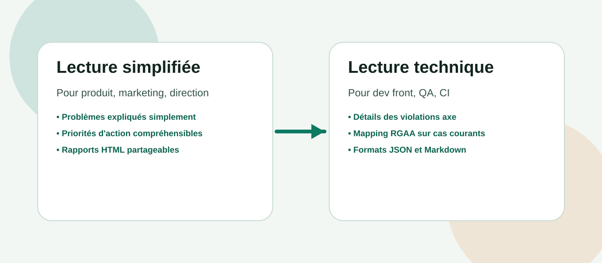
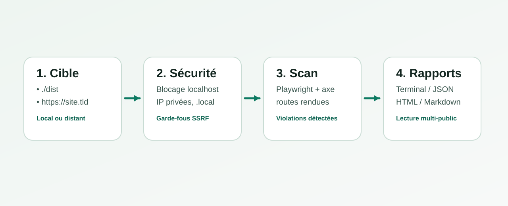
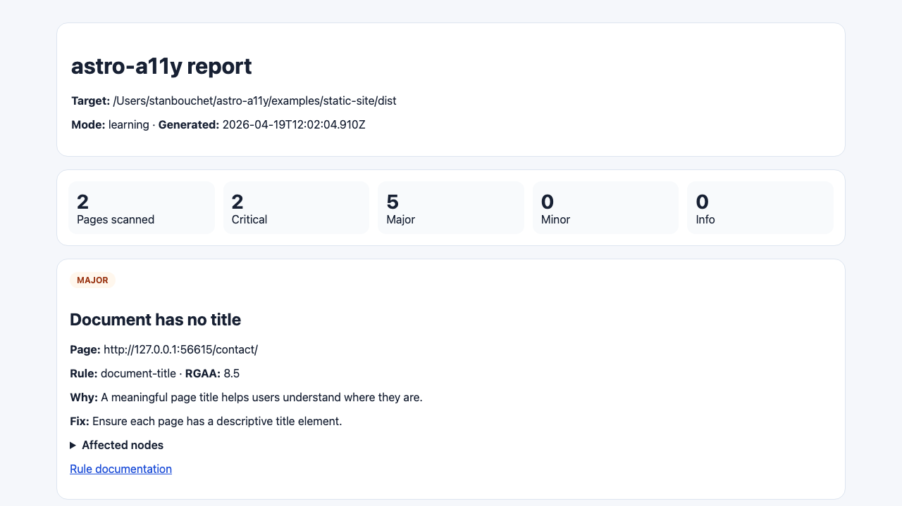

Ce que fait astro-a11y
L'outil détecte automatiquement des défauts d'accessibilité techniques sur les pages déjà rendues, puis propose des pistes de correction.
Boîte à outils open source pour Astro
astro-a11y scanne vos pages rendues avec Playwright + axe, enrichit les résultats avec des recommandations actionnables et relie les problèmes courants au RGAA.
Pour le grand public et les décideurs
L'outil détecte automatiquement des défauts d'accessibilité techniques sur les pages déjà rendues, puis propose des pistes de correction.
Il ne remplace pas un audit humain complet ni les tests utilisateurs. C'est un garde-fou opérationnel, pas une certification légale.

Pour les développeurs
Une cible locale (./dist) ou distante (https://...) est analysée avec garde-fous sécurité.
Les pages sont ouvertes dans Playwright puis vérifiées via @axe-core/playwright.
Les violations sont enrichies avec recommandations et mapping RGAA pour prioriser les fixes.

Positionnement
Les deux projets sont complémentaires, mais ils ne répondent pas au même besoin principal.
Un guardrail Astro-first: il s'intègre au build Astro (ou via CLI) pour industrialiser un contrôle régulier et produire des rapports exploitables par les équipes dev, QA et produit.
Points forts: intégration Astro, pipeline simple, formats Terminal/JSON/HTML/Markdown, garde-fous de sécurité sur scans distants.
Un pré-audit RGAA généraliste, orienté pédagogie et lecture de conformité, avec une approche plus large hors contexte Astro.
Points forts: vulgarisation RGAA, couverture présentée par thèmes, et usages orientés diagnostic initial.
En pratique: si ton équipe construit en Astro et veut un contrôle continu au moment du build, astro-a11y est la bonne couche. Pour une lecture RGAA plus transversale et pédagogique, rgaa-audit reste très utile.
Lien vers l'autre projet: https://stan69000.github.io/rgaa-audit/
Preuve visuelle
Cette capture provient des artefacts versionnés du dépôt, générés par le scénario d'exemple.

Démarrage
pnpm add -D @astro-a11y/astro-integration
pnpm astro buildimport { defineConfig } from 'astro/config';
import astroA11y from '@astro-a11y/astro-integration';
export default defineConfig({
integrations: [astroA11y({ mode: 'balanced' })]
});
Rapports par défaut dans dist/astro-a11y/. La CLI reste disponible pour scanner un dossier build ou une URL.